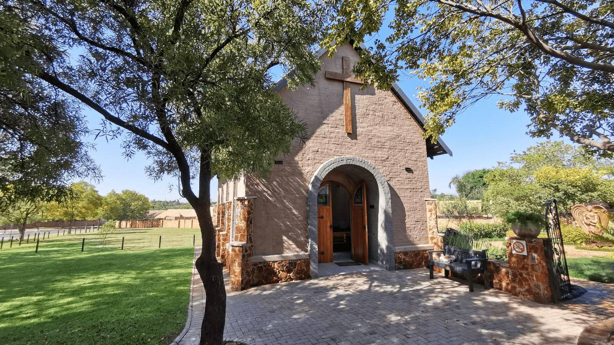

Geestelike begeleiding
Christelike geestelike begeleiding is ’n proses waarin gelowiges pastoraal begelei word deur gebed, die Woord en geloof. Die sentrum is weeksdae oop, met afspraaktye Maandag, Dinsdag en Donderdag vanaf 09:00.
Deur 02
Christelike geestelike begeleiding en professionele berading vir individue en groepe, vir lidmate en vir enigeen in Elarduspark, ongeag geloof.

Christelike geestelike begeleiding is ’n proses waarin gelowiges pastoraal begelei word deur gebed, die Woord en geloof. Die sentrum is weeksdae oop, met afspraaktye Maandag, Dinsdag en Donderdag vanaf 09:00.
Individuele en groepberading vir emosionele, sosiale en gedragsuitdagings, insluitend krisis- en traumaondersteuning. GriefShare (rouverwerking) en DivorceCare (egskeidingsondersteuning) loop as deurlopende groepe, saam met kort kursusse oor verlies, ouerskap en stres.
Dertig minute, met gebed en die geleentheid vir nagmaal. Jy hoef nie vooraf te bespreek om die kapeldiens by te woon nie.
’n Selfgeleide gebedstuin met 12 stasies, boekies en kerse. Oop Maandag tot Vrydag, 08:00–16:00. Loop dit op jou eie pas.
Jy hoef nie lid te wees om deur hierdie deur te loop nie. Toegang tot die Berading Sentrum